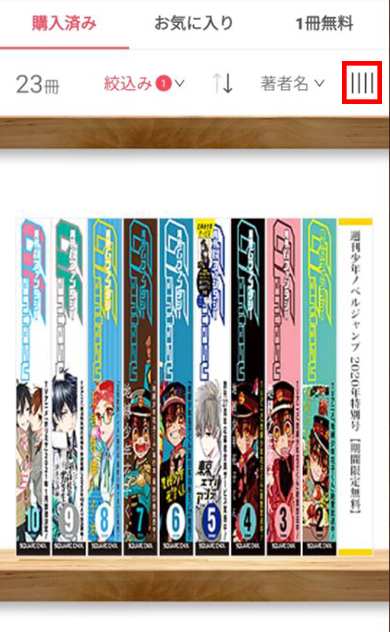
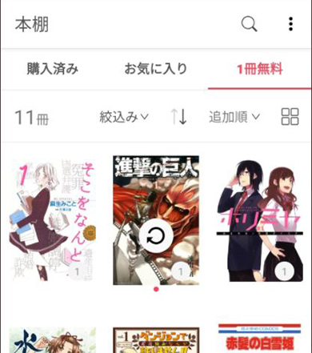

每周追连载攒合集，我用 ebookjapan 搭了一条不踩坑的购书流水线
从网页版领券下单到应用端同步阅读，讲清 ebookjapan 购书与阅读的完整工作流，覆盖同步、串号、书脊管理三个高频断点。
我每周要追三四部连载、每月攒两三套合集，同时把单本单价压到五百日元以下。以前这套事至少要三条流程串着来：网页查有没有券、应用里找书买、读完还要手动核对书架——每个环节都能出岔子，最糟的时候网页买了书应用里半天不出现，得来回登好几次账号才发现是串号。
现在一条链就搞定：网页版领券下单，应用端书架拉一下同步，书脊视图里挑出来读。中间只用到一个 Yahoo! JAPAN ID 当胶水，再也没有"书不见了"的错觉。下面按以前怎么干、现在怎么接、哪几处容易断、边界在哪，拆开说清楚。
旧流程的三个卡壳点
先说我之前怎么干的——这三个痛点如果你也遇到，那换流程就能直接受益。
第一，应用内购书走硬币结算，根本用不了券。优惠券是书城侧的促销工具，只挂在网页版结算链路上；应用内的硬币体系走的是 Google Play 或 App Store 的抽成链路，两套账本互不打通。我以前每次先在网页版领完券，跑去应用里下单，才发现根本找不到券的入口，白白错过折扣。
第二，书架同步机制搞不明白，缺书成了日常。网页版买了书，打开应用书架就是没有——以为是丢了，其实是同步没跑。我试过重启应用、重装、甚至联系客服，直到有次浏览器登录网页版发现书明明好好的在那里，才意识到不是丢书，是应用端没同步过来。
第三，收藏越来越多，书架管理全靠肉眼找。攒了一百多卷之后，每次想找某一卷，列表页翻半天，封面视图占屏幕又看不全整套的进度。直到换了书脊视图，才发现这套设计是真为收藏型读者做的。

新流程：四步串起来，每一步接哪里
整套链路从"打开电脑领券"开始，到"手机离线阅读"结束，中间的衔接点就是 Yahoo! JAPAN ID 的云端同步——书跟着 ID 走，所有设备登同一个号，记录自动通。
第一步：网页版领券下单（网页端）
打开ebookjapan官网，登录同一个 Yahoo! JAPAN ID。先到券一覧把能领的券都领了，包括初回特典（首次登录的大额折扣券，一般是多张分次使用）、曜日券（按星期发放，平日周末券面不同）、合集券（面向特定系列的折扣）。领完再挑要买的书，结算时直接选券抵扣——网页版下单不需要充硬币，直接结算就行。
这一步的核心纪律：只在网页版下单，永远不碰应用内购书。应用内的硬币体系跟券体系是两套账，你在应用里充了硬币，网页版下单根本用不上；反过来在网页版用券下了单，硬币余额也不会动。别为了凑某一边又充一次，白白浪费。
第二步：应用端手动同步（手机/平板端）
网页版下单完成后，从ebookjapan下载拿到的手机应用，登录同一个 Yahoo! JAPAN ID。进本棚（书架）页，把列表滚到最顶部，继续向下拉屏幕——出现圆圈箭头图标就是同步成功了。新购的书会自动出现在購入済み（已购）分类里。

这一步是整套流程最关键的衔接点：云端同步的是记录，不是书本体。同步不会把下载数据搬过来，要离线阅读还得手动下载；同步不费流量，每次拉一下只是对一下书目信息，随手刷一下没负担。
第三步：书脊视图管理藏书（书架端）
购书多了之后，打开书架进購入済み分类，点布局切换按钮，从列表、封面、书脊三种里选书脊。一排书脊立在那里，像对着一面实体书柜——长篇系列一眼能看全整套的进度，周刊月刊按期排列，找冷门书的时候切回列表更快。
书脊视图有两个局限：只有已购分类支持，收藏和免费分类没有；字体小的作品远看难认。但日常收藏管理足够用了，跟文件夹搭配着来——先按系列建文件夹归拢，柜面只留常读的书。
第四步：离线下载，路上读（阅读端）
选中要离线的书，点下载。下完就是本地数据，地铁里没网也能翻。换机的时候登录同一个 ID，书架记录自动恢复，离线数据要重新下一遍——这是正常的，书不会丢。
两个容易断链的地方，提前堵上
流程里有两个环节特别容易出问题，我踩了半年坑才总结出处理套路，列出来让你少走弯路。
断点一：同步拉了还是没出现新购的书
首先核对登录的 ID——多个 Yahoo! JAPAN ID 的人，串号是缺书的头号原因。书跟着 ID 走，登错号书架自然是另一批。排查顺序：先确认 ID 对不对，再拉一次同步，还不行就重启应用。最后实在没头绪，浏览器登录同一个账号看网页版书架做双向判断：网页版有、应用没有，是同步或登录端问题；两边都没有，是当时购买没成功，去查支付记录。完整的排查步骤和换机迁移细节，在ebookjapan文档里能找到更细的条目。
断点二：应用内充了硬币又想在网页版用券
别纠结了，两套体系就是不互通。已经充了硬币的，就用硬币在应用里买；想省钱的，就在网页版领券下单。别想着两边都占，只会让账本越来越乱。真要退硬币，得单独走 Google Play 或 App Store 的退款流程，麻烦得很。
效果和边界
这套流程跑下来，我每周少了两次手动核对书架的操作（以前每次发现缺书都要来回排查账号），每月用券能省掉 30-40% 的购书预算，书脊视图让找书从"翻半天"变成"扫一眼"。
但也不是所有情况都适合：如果你只有一个 Yahoo 账号、从来不攒合集、单本买了就读完，那直接在应用里下单反而更省事，没必要特意开网页版绕一圈。另外书脊视图只有已购分类支持，如果你大量收藏免费书，那书架管理还是得靠列表和文件夹。
说到底，这条工作流的核心就一句话——用对工具：网页版负责领券省钱，应用负责同步阅读和离线下载，Yahoo ID 当整条链的胶水。搞清楚了这三层分工，书架缺书、券用不了、串号这三个高频坑基本就不会再踩了。
本地整理的购书与阅读资料在三个仓库都能拿到，GitHub、Gitee、GitCode 各有一份镜像，国内网络慢的时候直接切过去就行。三个仓库的链接：GitHub、Gitee、GitCode。